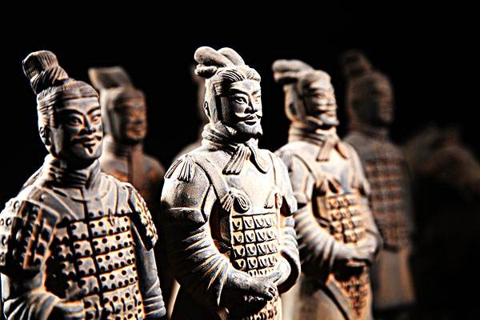
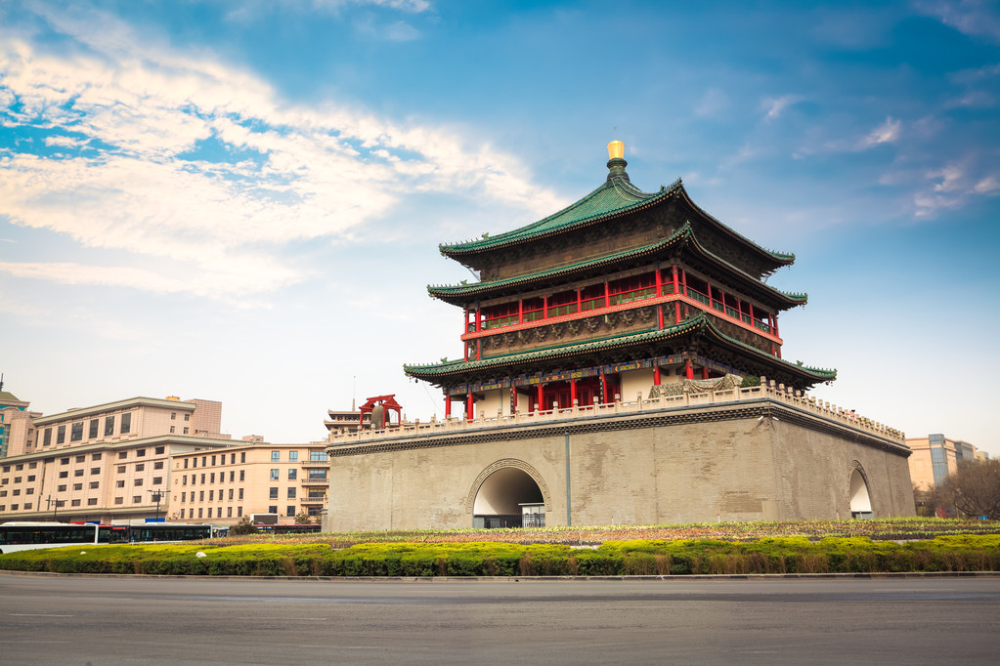
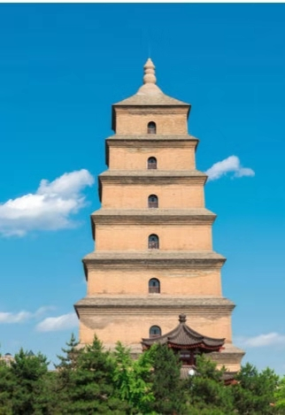

—— 西安风景 ——
 西安地处四关之中，秦岭北麓，渭水之南。有“十三朝古都”之称，这些伟大的王朝在西安留下了许多的历史遗迹。
其中有 兵马俑、大雁塔、钟鼓楼等。 长安文化影响极其深远，由于建都长安的周、秦、汉、隋、唐是中国古代最为强盛和文明的黄金时代，也因此留下无数的历史遗迹，被誉为天然历史博物馆。
西安地处四关之中，秦岭北麓，渭水之南。有“十三朝古都”之称，这些伟大的王朝在西安留下了许多的历史遗迹。
其中有 兵马俑、大雁塔、钟鼓楼等。 长安文化影响极其深远，由于建都长安的周、秦、汉、隋、唐是中国古代最为强盛和文明的黄金时代，也因此留下无数的历史遗迹，被誉为天然历史博物馆。

秦始皇兵马俑
兵马俑，即秦始皇兵马俑，亦简称秦兵马俑或秦俑，第一批全国重点文物保护单位，第一批中国世界遗产，位于今陕西省西安市临潼区秦始皇陵以东1.5千米处的兵马俑坑内。
--- ❤ ---
在风景中 看历史

钟楼
钟鼓楼广场建于上世纪90年代末期，始建之初将建于两楼之间的杂乱建筑拆除， 使从前很难相见的钟楼和鼓楼“相见尽欢颜”，成为了西安市一大景观，钟鼓 楼广场是一项古迹保护与旧城更新的综合性工程。环境艺术设计沿着“晨钟暮 鼓”这一主题向古今双向延伸，在空间处理上吸取中国传统空间组景经验，与 现代城市外部空间的理论相结合，为古城西安提供了一个“城市客厅”。

大雁塔
大雁塔位于唐长安城晋昌坊（今陕西省西安市南）的大慈恩寺内，又名“慈恩寺塔” 。唐 永徽三年（652年）， 玄奘为保存由 天竺经 丝绸之路带回 长安的经卷佛像 主持修建了大雁塔，最初五层，后加盖至九层，再后层数和高度又有数次变更，最 后固定为今天所看到的七层塔身，通高64.517米，底层边长25.5米。
“
西有罗马 东有长安 十三朝古都 × 随着日转星移 沉寂于 历史长河 “
—— 那些不为人知的美丽 ——
大华 一九三五
陕西历史博物馆
高家大院的民居院落
中国唐苑
城墙
曲江遗址公园

五星街教堂
如书中所写的白鹿原
荐福寺内的小雁塔
书院门
粉巷
德福巷